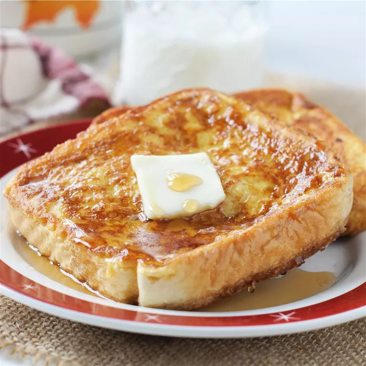
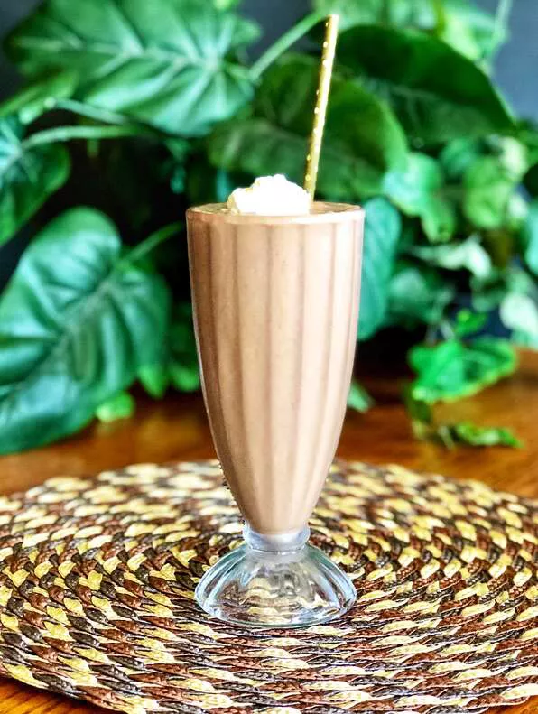

Lasagna in all its glory

How to make a Lasagna
A sumptuous lasagna is a culinary marvel, consisting of layers of wide pasta sheets nestled
between rich, velvety sauces, savory meats or vegetables, and decadent cheeses.
Each layer tells a story of flavor, with the pasta sheets providing a sturdy foundation
for the medley of ingredients above. The tomato-based sauce, simmered to perfection
with garlic, onions, and herbs, lends a tangy sweetness that harmonizes with the creamy
richness of béchamel sauce.
As you delve deeper into the layers, you encounter a symphony of textures and tastes: tender ground beef or hearty vegetables mingle with the tangy tomato sauce, while the creamy béchamel sauce adds a luxurious silkiness. Grated Parmesan, mozzarella, or ricotta cheese blankets each layer, melting into a gooey, golden crust when baked to perfection. With its comforting warmth and indulgent flavors, lasagna is more than just a dish—it's a culinary embrace that satisfies both the palate and the soul.
Ingredients
- Lasagna noodles
- Tomato sauce
- Bechamel sauce
- Ground beef
- Grated Parmesan
- Mozzarella cheese
- Ricotta cheese
- Salt and pepper
- Olive oil
- And optional toppings like garlic powder, dried organo, dried basil, red pepper flakes.
Steps
- Prepare the ingredients
- Cook the lasagna noodles according to package instructions until al dente.
- Prepare the tomato sauce and béchamel sauce if making from scratch.
- If using meat, cook and season it with salt, pepper, and any desired herbs or spices.
- If using vegetables, sauté them until tender and season with salt, pepper, and any desired herbs or spices.
- Assemble the layers
- Preheat the oven to the temperature specified in your recipe (usually around 375°F or 190°C).
- In a baking dish, spread a thin layer of tomato sauce on the bottom to prevent sticking.
- Arrange a layer of cooked lasagna noodles over the sauce, slightly overlapping them.
- Spread a layer of tomato sauce over the noodles, followed by a layer of bechamel sauce.
- Add a layer of cooked meat or sautéed vegetables (depending on your preference).
- Sprinkle grated Parmesan cheese and shredded mozzarella cheese over the sauce.
- Repeat the layers of noodles, sauces, meat or vegetables, and cheeses until you've used up all your ingredients, finishing with a layer of sauce and cheese on top.
- Bake the lasagna
- Cover the baking dish with aluminum foil, tenting it slightly to prevent the cheese from sticking.
- Place the lasagna in the preheated oven and bake for about 30-40 minutes, or until the cheese is melted and bubbly.
- Remove the foil during the last 10 minutes of baking to allow the cheese to brown slightly.
- Once baked, remove the lasagna from the oven and let it cool for a few minutes before serving.
- Serve and Enjoy
- Garnish the lasagna with fresh basil leaves or parsley, if desired.
- Cut the lasagna into squares and serve hot, accompanied by a side salad and garlic bread for a complete meal.
- Enjoy the delicious layers of flavors and textures in each bite of this comforting classic!
French toast in all its delight

How to make French Toast
French toast is a beloved breakfast staple cherished for its simplicity and comforting flavors. It starts with slices of bread, typically white or whole wheat, though any bread variety works well. These slices are dipped into a mixture of beaten eggs and milk, often infused with vanilla extract and cinnamon, creating a creamy custard-like coating. Once soaked, the bread is carefully fried in a skillet until golden brown on both sides, resulting in a crispy exterior that contrasts beautifully with its tender, custardy interior.
Served piping hot, French toast is a canvas for a myriad of toppings, from traditional maple syrup and powdered sugar to fresh berries, whipped cream, or even savory additions like bacon or cheese. This versatility allows for endless variations, catering to both sweet and savory preferences. Whether enjoyed as a leisurely weekend brunch or a quick weekday breakfast, French toast remains a timeless favorite, offering a delightful combination of textures and flavors that never fails to satisfy.
Ingredients
- Bread slices
- Eggs
- Milk
- Vanilla extract(Optional)
- cinnamon
- Butter or Oil
- Toppings of your choice(Maple syrup, powdered sugar, fresh fruit,etc)
Steps
- Prepare the Egg mixture:
- In a shallow bowl or pie dish, crack the eggs. The number of eggs you use depends on how many slices of bread you're making. Usually, you'll need about 1 egg for every 2 slices of bread.
- Add a splash of milk to the eggs. The milk helps to make the French toast custardy.
- If desired, add a splash of vanilla extract and a sprinkle of cinnamon to the egg mixture for extra flavor. Mix everything together well.
- Soak the bread:
- Dip each slice of bread into the egg mixture, ensuring both sides are coated. Let the bread soak for a few seconds to absorb the mixture. Be careful not to let it soak too long, or the bread will become too soggy.
- Cook the French Toast:
- Heat a skillet or frying pan over medium heat and add a little butter or oil to coat the bottom.
- Once the pan is hot, place the soaked bread slices onto the pan. Cook for 2-3 minutes on each side, or until golden brown and cooked through.
- You may need to adjust the heat as you go to prevent the French toast from burning.
- Serve:
- Once the French toast slices are cooked to your liking, remove them from the pan and place them on a plate.
- Serve immediately with your favorite toppings, such as maple syrup, powdered sugar, fresh fruit, or whipped cream.
Chocolate Banana Smoothie

How to make a Chocolate Banana Smoothie
A Chocolate Banana Smoothie is a decadent yet nutritious beverage that combines the rich flavors of chocolate with the natural sweetness of ripe bananas. To make this indulgent treat, ripe bananas are peeled and sliced, then blended with milk or a dairy-free alternative like almond milk or coconut milk. Cocoa powder or chocolate syrup is added to infuse the smoothie with a luscious chocolatey taste, creating a delightful balance of flavors. For added creaminess and protein, some recipes incorporate Greek yogurt or a scoop of protein powder, enhancing both the texture and nutritional profile of the smoothie.
Once blended to creamy perfection, the Chocolate Banana Smoothie is poured into glasses and optionally garnished with chocolate shavings, banana slices, or a dollop of whipped cream for an extra touch of indulgence. Whether enjoyed as a quick breakfast on the go, a satisfying post-workout refuel, or a sweet afternoon pick-me-up, this smoothie offers a delightful combination of flavors and nutrients, making it a versatile and irresistible treat for chocolate and banana lovers alike. Its refreshing and satisfying qualities make it a favorite for those seeking a healthy yet indulgent beverage option.
Ingredients
- 2 ripe bananas, peeled and sliced
- 1 cup of milk
- 2 tablespoons of cocoa powder or chocolate syrup
- 1/2 cup of Greek yogurt or 1 scoop of protein powder
- Ice cubes
Steps
- Prepare the ingredients:
- Peel anc slice the ripe bananas.
- Measure out the milk, cocoa powder or chocolate syrup, and Greek yogurt or protein powder if using.
- Blend:
- In a blender, combine the sliced bananas, milk, cocoa powder or chocolate syrup, and Greek yogurt or protein powder if using.
- If you prefer a colder smoothie, you can also add a handful of ice cubes.
- Blend until smooth:
- Secure the lid on the blender and blend the ingredients until smooth and creamy.
- If necessary, scrape down the sides of the blender and blend again to ensure everything is well combined.
- Taste and adjust:
- Taste the smoothie and adjust the sweetness or thickness to your liking. If you prefer a sweeter smoothie, you can add a bit more chocolate syrup or a sweetener of your choice.
- Serve:
- Once blended to your desired consistency, pour the Chocolate Banana Smoothie into glasses and serve immediately.
- Optionally, garnish with chocolate shavings, banana slices, or a dollop of whipped cream for an extra indulgent touch.